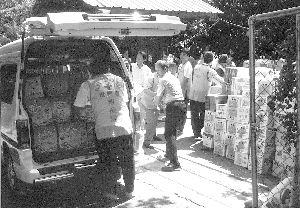
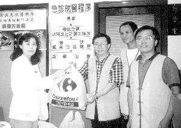
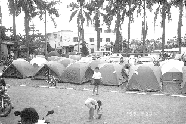

| L'amour en action |
|  |
Les amis pratiquants chargent des provisions de secours pour les livrer rapidement dans les zones sinistrées. |
|  |
Le bureau d'aide sociale de l'Hôpital Municipal Chunghsiao de Taipei accepte des affaires de secours données par l'Association internationale du Maître Suprême Ching Hai. |
Le 11 octobre, lors d'une commémoration nationale pour les victimes du tremblement de terre tenue au Stade Linkou près de Taipei, le Président Lee et le vice-président Lien de Formose, les présidents des cinq paliers du gouvernement de Formose, les représentants de tous les secteurs sociaux, les parents et amis des gens morts dans le séisme se sont rassemblés pour pleurer la mort des victimes et pour prier pour le réconfort spirituel des survivants. Un représentant de notre groupe d'initiés s'est rendu à la soirée, récitant en silence les Noms Sacrés pour les victimes et priant pour qu'ils soient bénis par Dieu. Dans une cérémonie simple, mais solennelle, le Président Lee a dit que ceux qui ont péri dans le sinistre étaient de nobles saints et des enseignants qui nous apprenaient une leçon par leur vie et qui avaient souffert pour les 22 millions de gens de Formose. (Le nombre de morts était d'environ 2200) Malgré la souffrance, il a encouragé ses compatriotes à ne pas perdre confiance, à tirer du courage de ces malheurs et à joindre leur coeur aux autres, dans la solidarité et la force, pour créer un avenir encore meilleur.
|  |
Le campus de l'école élémentaire de Chuhsiang dans le comté de Nantou est rempli de tentes offertes par l'Association internationale du Maître Suprême Ching Hai. Les victimes nous remercient pour ces abris temporaires. |
Le troisième jour après le tremblement de terre, très tôt, nous avons transporté des affaires de première nécessité dans les zones affectées de Chungliao. En chemin, un jeune hommes est venu nous demander de l'aide pour son village où aucune équipe de secours n'était venue. Nous avons donné tous ce que nous avions à ce village désespérément dans le besoin. Quand les villageois nous ont aperçus, leurs visages découragés et désemparés se sont mis à briller de la lumière de l'amour et de l'espoir. En nous remerciant, le jeune homme leur répétait qui était notre Maître et que c'était grâce à l'amour de Maître qu'ils recevaient cette aide opportune.
<Chiayi> Immédiatement après le tremblement de terre du 21/09, les amis pratiquants du centre de Chiayi, en suivant le instructions pleines d'amour de Maître, ont organisé une équipe de secours pour rejoindre l'opération principale de secours.
Á Touliu dans le comté de Yunlin, où plusieurs édifices s'étaient écroulés, une équipe d'amis pratiquants ont visité les abris avant d'aller dans les zones sinistrés. Des douzaines de personnes étaient encore sous les décombres et les équipes de secours de la région travaillaient sans cesse pour les sauver. Pendant toute la nuit, les amis pratiquants ont préparé des repas chauds pour les équipes de secours les aidant indirectement dans leur travail.
Bien que les routes aient été coupées dans les régions montagneuses, les amis pratiquants ont quand même apporté de l'eau, des tentes, des sacs de couchage, et d'autres affaires d'urgence dans les villages sérieusement touchés.
Dans le comté de Nantou, lieu de l'épicentre, le séisme a causé les plus sévères et vastes dommages. Pendant ces trois jours, l'équipe de secours de Chiayi avec l'aide des amis pratiquants de tous les coins de Formose se sont joints aux opérations de secours organisées par le centre de Nantou. Notre tâche principale était de livrer du matériel comme des tentes, des sacs de couchage, de l'eau, de la nourriture, et des vêtements dans les régions dans le besoin le plus urgent.